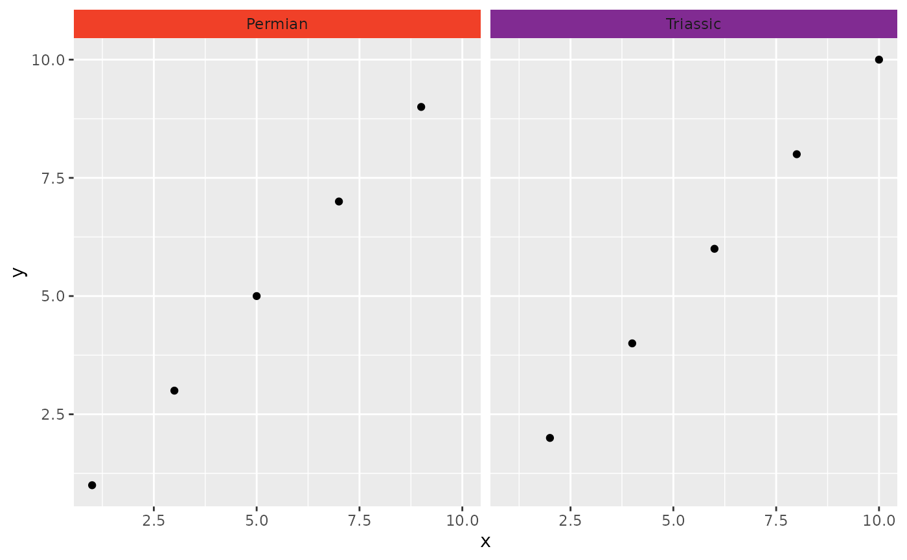

facet_wrap_color behaves similarly to ggplot2::facet_wrap() in that it
wraps a 1d sequence of panels into 2d. The main difference is that it also
allows the user to specify the background and label colors of the individual
facet strips using the colors and lab_colors arguments. This is generally
a better use of screen space than facet_grid_color() because most displays
are roughly rectangular.
Usage
facet_wrap_color(
facets,
colors,
nrow = NULL,
ncol = NULL,
scales = "fixed",
shrink = TRUE,
labeller = "label_value",
lab_colors = "auto",
as.table = TRUE,
drop = TRUE,
dir = "h",
strip.position = "top",
axes = "margins",
axis.labels = "all"
)
facet_wrap_geo(
facets,
colors = stages,
nrow = NULL,
ncol = NULL,
scales = "fixed",
shrink = TRUE,
labeller = "label_value",
lab_colors = "auto",
as.table = TRUE,
drop = TRUE,
dir = "h",
strip.position = "top",
axes = "margins",
axis.labels = "all"
)Arguments
- facets
A set of variables or expressions quoted by
vars()and defining faceting groups on the rows or columns dimension. The variables can be named (the names are passed tolabeller).For compatibility with the classic interface, can also be a formula or character vector. Use either a one sided formula,
~a + b, or a character vector,c("a", "b").- colors
Specifies which colors to use to replace the strip backgrounds. Either A) a function that returns a color for a given strip label, B) the character name of a function that does the same, C) a named character vector with names matching strip labels and values indicating the desired colors, or D) a data.frame representing a lookup table with columns named "name" (matching strip labels) and "color" (indicating desired colors). If the function returns
NA, the default background color will be used.- nrow, ncol
Number of rows and columns.
- scales
Should scales be fixed (
"fixed", the default), free ("free"), or free in one dimension ("free_x","free_y")?- shrink
If
TRUE, will shrink scales to fit output of statistics, not raw data. IfFALSE, will be range of raw data before statistical summary.- labeller
A function that takes one data frame of labels and returns a list or data frame of character vectors. Each input column corresponds to one factor. Thus there will be more than one with
vars(cyl, am). Each output column gets displayed as one separate line in the strip label. This function should inherit from the "labeller" S3 class for compatibility withlabeller(). You can use different labeling functions for different kind of labels, for example uselabel_parsed()for formatting facet labels.label_value()is used by default, check it for more details and pointers to other options.- lab_colors
Specifies which colors to use for the strip labels. Either A) a function that returns a color for a given strip label, B) the character name of a function that does the same, C) a named character vector with names matching strip labels and values indicating the desired colors, D) a data.frame representing a lookup table with columns named "name" (matching strip labels) and "lab_color" (indicating desired colors), or E) "auto" (the default), which set the labels to black or white, whichever has better contrast with the background color, based on recommendations by the International Telecommunication Union. If the function returns
NA, the default label color will be used.- as.table
If
TRUE, the default, the facets are laid out like a table with highest values at the bottom-right. IfFALSE, the facets are laid out like a plot with the highest value at the top-right.- drop
If
TRUE, the default, all factor levels not used in the data will automatically be dropped. IfFALSE, all factor levels will be shown, regardless of whether or not they appear in the data.- dir
Direction: either
"h"for horizontal, the default, or"v", for vertical.- strip.position
By default, the labels are displayed on the top of the plot. Using
strip.positionit is possible to place the labels on either of the four sides by settingstrip.position = c("top", "bottom", "left", "right")- axes
Determines which axes will be drawn in case of fixed scales. When
"margins"(default), axes will be drawn at the exterior margins."all_x"and"all_y"will draw the respective axes at the interior panels too, whereas"all"will draw all axes at all panels.- axis.labels
Determines whether to draw labels for interior axes when the scale is fixed and the
axisargument is not"margins". When"all"(default), all interior axes get labels. When"margins", only the exterior axes get labels, and the interior axes get none. When"all_x"or"all_y", only draws the labels at the interior axes in the x- or y-direction respectively.
Details
facet_wrap_geo(...) is an alias of facet_wrap_color() with the default of
colors set to stages.
See also
Other faceting functions:
facet_grid_color(),
facet_nested_color(),
facet_nested_wrap_color()
Examples
library(ggplot2)
df <- data.frame(x = 1:10, y = 1:10, period = c("Permian", "Triassic"))
ggplot(df) +
geom_point(aes(x, y)) +
facet_wrap_color(vars(period), colors = periods)
